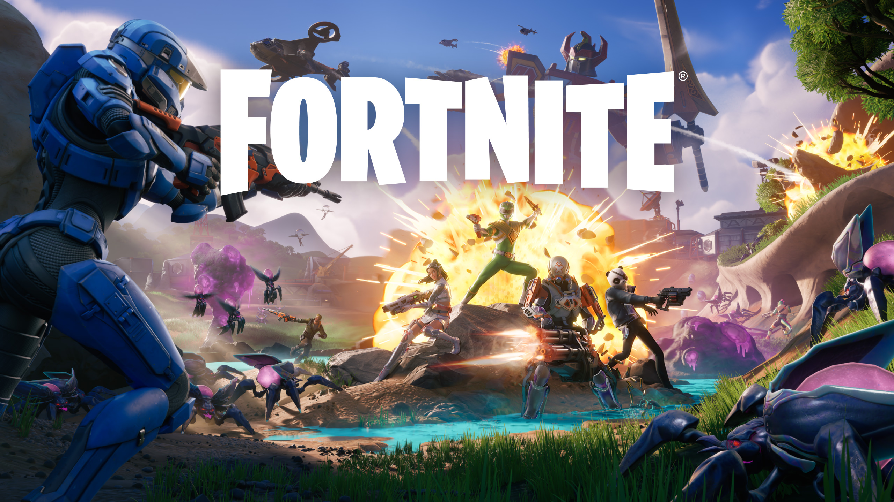

¡El juego con el que más me divierto!
Fortnite sin duda es mi juego favorito, tengo bastante tiempo de jugarlo y en la actualidad sigue siendo el título con el que más me divierto y paso más horas jugando con mis amigos.

Trailer del videojuego
Con base al tiempo que tengo jugando video juegos este no es el unico que llego a ser mi favorito, tambien hubo algunos mas como call of duty warzone, clasicos como mario bros, juegos de carreras como forza horizon y algunos mas